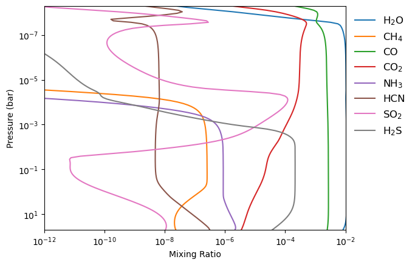

About Me
 Hi, I'm Ian, a physics major at Cornell with a passion for astronomy & planetary science. I am specifically
interested in the use of atmospheric forward models to inform our interpretation of transmission spectrum data,
allowing us to accurately characterize exoplanets.
Hi, I'm Ian, a physics major at Cornell with a passion for astronomy & planetary science. I am specifically
interested in the use of atmospheric forward models to inform our interpretation of transmission spectrum data,
allowing us to accurately characterize exoplanets.
Research Interests: photochemistry, atmospheric models, transmission spectroscopy
Education: Cornell University Class of 2027, Physics BA
Publications: None yet, but that will change
Fun facts about me:
* My very first Wikipedia edit was on the hot Jupiter page!
I selected the artist's impression of an ultra-hot Jupiter for the page (replacing an AI-generated image).
* Outside of school and research, I play clarinet. I also practice kendo, a martial art and sport, and currently
serve as the co-president of my university's kendo club.
Research

Disequilibrium Retrieval for WASP-39b
The 2023 detection of photochemically produced sulfur
dioxide in the atmosphere of WASP-39b revealed that the effects of disequilibrium processes on the compositions
of exoplanets can be significant. Failing to account for such processes in atmospheric retrievals can lead to biased
estimates of the carbon-to-oxygen ratio and metallicity, which are key to understanding planet formation. Using
chemical kinetics modeling, I am working on incorporating disequilibrium retrievals into the retrieval code POSEIDON,
and benchmarking this technique on the full JWST dataset for WASP-39b.
This research is supported by the Rawlings Cornell Presidential Research Scholar program, and for the summer of 2025 was
supported by the Roger and Mary Lou West Undergraduate Research Fellowship.
Contact
Email: izb2@cornell.edu